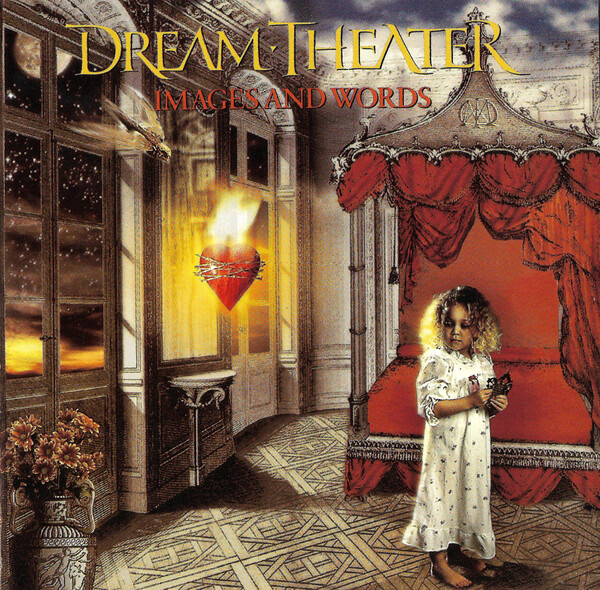
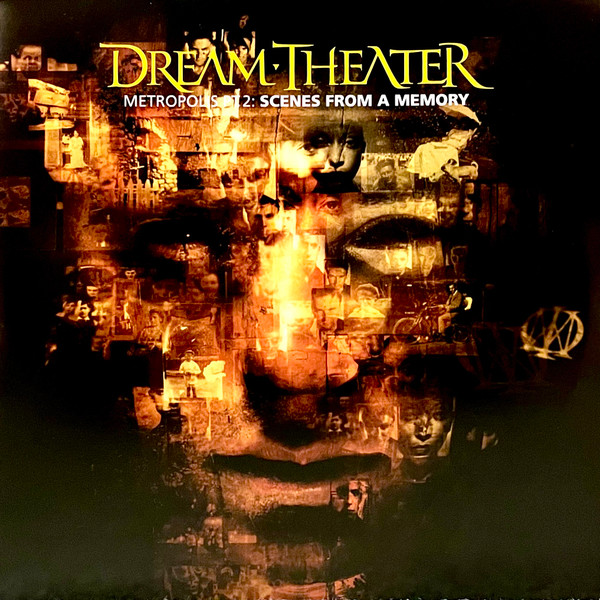

Dream Theater adalah band progresif metal asal Amerika Serikat yang didirikan pada tahun 1985.
Mereka dikenal karena struktur lagu yang panjang, perubahan ritme yang rumit, serta solo instrumen yang teknis.
Lagu-lagu Dream Theater sering berdurasi lebih dari sepuluh menit dan terdiri dari beberapa bagian, sehingga memberi ruang bagi setiap anggota untuk menunjukkan kemampuan masing-masing.
Pendengar dapat merasakan perjalanan emosional melalui dinamika lagu yang berubah dari lembut ke intens.
Sejarah Singkat
Band ini dibentuk oleh John Petrucci (gitar), John Myung (bass), dan Mike Portnoy (drum) ketika mereka masih muda.
Nama "Dream Theater" diambil dari nama sebuah teater lokal di Boston.
Mereka merilis album debut When Dream and Day Unite pada tahun 1989.
Anggota Band
Line-up klasik Dream Theater terdiri dari:
James LaBrie (vokal) – Bergabung pada 1991, dikenal dengan vokal yang kuat dan emosional.
John Petrucci (gitar) – Pendiri band, maestro gitar dengan teknik shredding yang luar biasa.
John Myung (bass) – Bassist virtuoso yang sering menggunakan teknik fingerstyle dan tapping.
Mike Portnoy (drum) – Drummer asli yang kembali bergabung pada Oktober 2024 setelah meninggalnya Mike Mangini pada Agustus 2024, dikenal dengan teknik double bass yang kompleks dan kontribusi pada lirik serta produksi.
Jordan Rudess (keyboard) – Bergabung pada 1999, menambahkan elemen sintetis dan progresif.
Band ini telah mengalami beberapa perubahan personel, terutama di posisi drum dan keyboard, tetapi tetap mempertahankan identitas musik yang unik.
Saya mengagumi lineup Dream Theater karena keahlian teknis masing-masing anggota yang sangat luar biasa, di mana setiap personel memiliki kemampuan bermain instrumen pada tingkat tinggi serta mampu menciptakan harmoni yang kompleks dan unik dalam setiap karya musik mereka.
Aliran Musik dan Pengaruh
Dream Theater menggabungkan elemen rock progresif, metal, jazz, dan musik klasik.
Mereka juga sering menggunakan teknik seperti odd time signatures (meter ganjil), modulasi kunci, dan poliritme.
Band ini mendapatkan pengaruh dari kelompok seperti Queen, Rush, Yes, dan Metallica.
Album dan Lagu Populer
Beberapa album paling terkenal mereka antara lain:


Images and Words (1992) – Album breakthrough yang menandai transisi Dream Theater ke suara yang lebih melodi dan komersial. Lagu populer "Pull Me Under" menjadi hit radio pertama mereka, membantu memperkenalkan band ke khalayak luas. Album ini menampilkan tema-tema seperti perjuangan pribadi dan eksistensialisme.
Metropolis Pt. 2: Scenes from a Memory (1999) – Album konsep rock opera yang menceritakan kisah tentang kehidupan, kematian, dan reinkarnasi. Ini dianggap sebagai salah satu karya terbaik mereka, dengan struktur lagu yang kompleks dan narasi yang koheren. Album ini menunjukkan kemampuan band dalam menciptakan cerita epik melalui musik.
Train of Thought (2003) – Album yang menunjukkan pengaruh metal yang lebih berat dan tema-tema sosial serta politik. Dirilis setelah kepergian drummer Mike Portnoy, album ini menandai perubahan gaya dengan pendekatan yang lebih agresif dan gelap. Lagu-lagu seperti "As I Am" dan "This Dying Soul" mengeksplorasi isu-isu seperti perang dan kebebasan berpendapat.
Selain itu, album seperti Six Degrees of Inner Turbulence (2002) menampilkan lagu epik "The Glass Prison" yang berdurasi lebih dari 13 menit, mengeksplorasi tema penjara emosional dan pembebasan. Album ini menunjukkan kemampuan band dalam menggabungkan elemen progresif dengan metal yang kuat.
Kontribusi terhadap Musik Progresif
Dream Theater sering dianggap sebagai pelopor di genre progressive metal.
Mereka mendorong batas teknik bermusik dan telah menginspirasi generasi musisi baru untuk mempelajari teori musik dan improvisasi.
 front back album covers download.jpg)